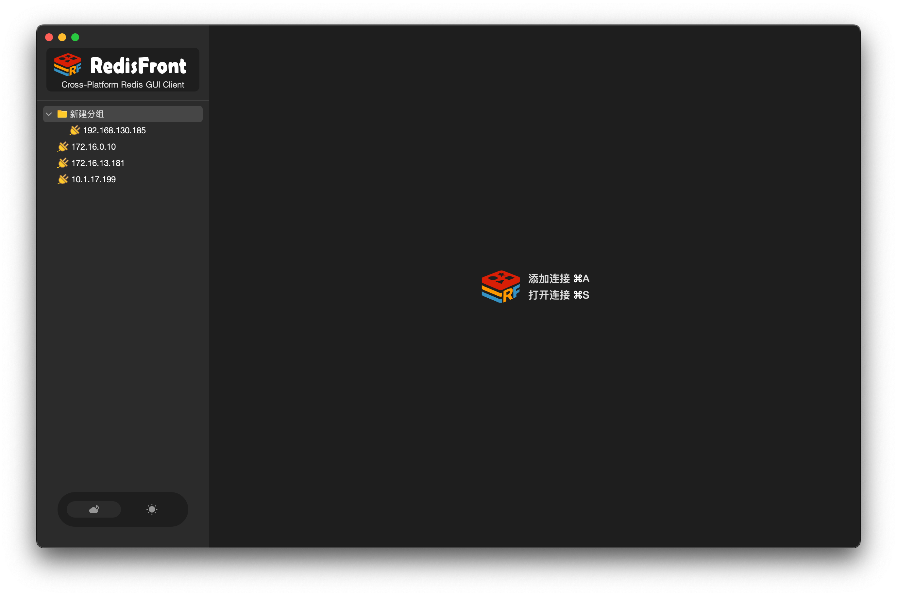
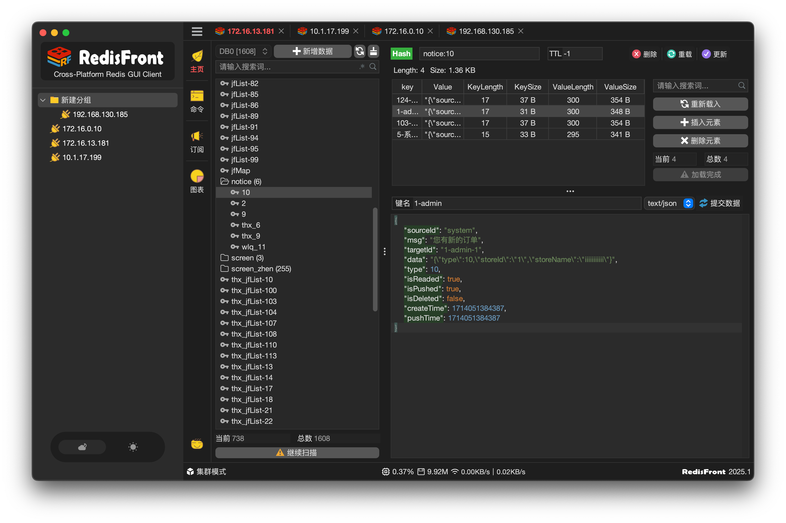
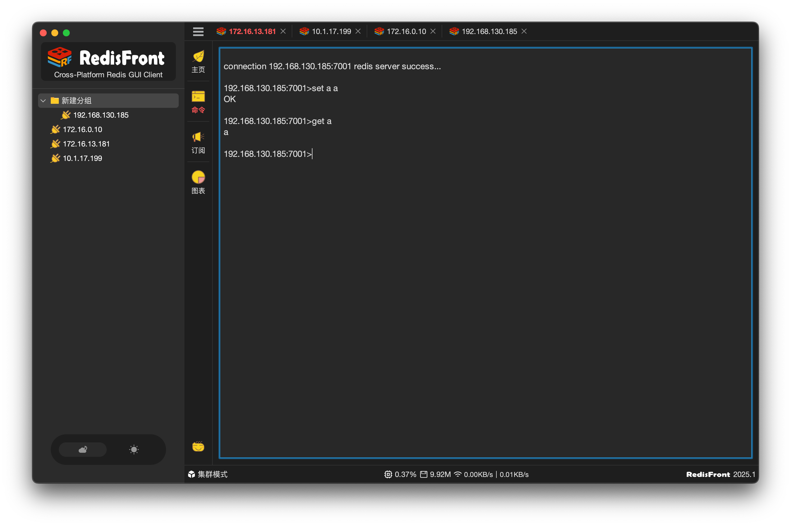
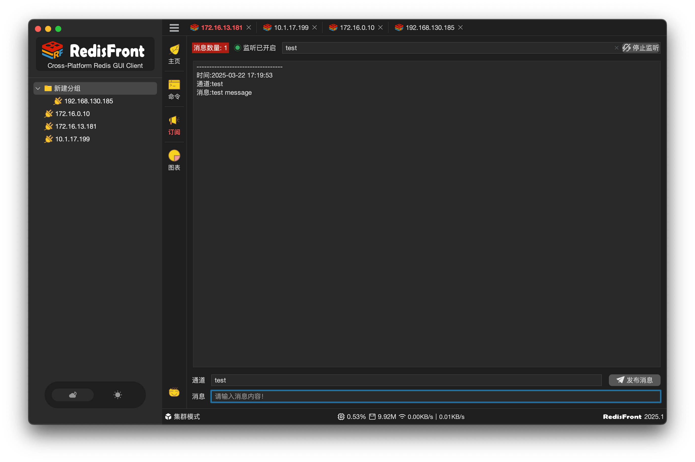
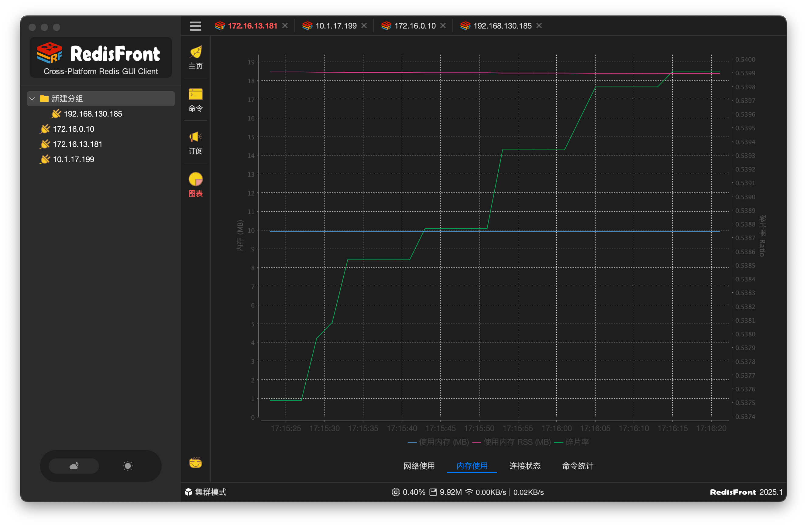

RedisFront 是 Dromara 开源社区旗下的跨平台 Redis 桌面客户端，自动识别部署形态，内置 SSH 隧道与 SSL，覆盖数据管理、实时监控、命令行与 Pub/Sub。 RedisFront is a cross-platform Redis GUI from the Dromara community. It auto-detects your deployment topology, ships with SSH tunneling and SSL, and covers data management, live monitoring, a command terminal and Pub/Sub.





每个能力都来自真实的 Redis 运维场景，而非功能清单的堆砌。Every capability comes from real-world Redis operations, not checkbox-driven design.
连接时自动判定单机、哨兵或集群；哨兵自动重定向到 Master，集群自动发现全部分片节点，无需手工配置。Detects standalone, sentinel or cluster on connect. Sentinel redirects to the master automatically; cluster discovers every shard without manual setup.
内置 SSH 端口转发，支持密码与私钥认证；集群模式下每个分片独立建立转发。SSL 支持自定义信任库。Built-in SSH port forwarding with password or private key auth. In cluster mode every shard gets its own tunnel. SSL supports custom truststores.
String、Hash、List、Set、ZSet、Stream、JSON 全覆盖，增量 SCAN 浏览、分页加载、TTL 管理、JSON 格式化与语法高亮。String, Hash, List, Set, ZSet, Stream and JSON — with incremental SCAN, paged loading, TTL management, JSON formatting and syntax highlighting.
AUTO / UTF-8 / GBK / GB18030 / Latin-1 / Escaped / Base64 / Hex，读写双向支持，中文乱码不再是谜题。AUTO / UTF-8 / GBK / GB18030 / Latin-1 / Escaped / Base64 / Hex — supported in both directions, so mojibake stops being a mystery.
网络吞吐、内存与碎片率、客户端连接数、命令执行数 / QPS 四类实时曲线；单次 INFO 采集，后台页签不轮询。Four live charts — network I/O, memory & fragmentation, client connections, commands / QPS. One INFO round-trip per sample, no polling on background tabs.
终端直接派发任意 Redis 命令，支持补全、历史与输出编码切换；Pub/Sub 面板支持集群订阅与消息发布。Dispatch any Redis command from the terminal with completion, history and output encoding switch. Pub/Sub panel works on cluster too.
Redis 无法公网访问？配一台跳板机就够了，隧道建立后所有功能与直连无异。Redis not reachable from your network? One jump host is enough — once the tunnel is up, everything works as if local.
集群 + SSH 时，客户端会为每个分片分配独立本地端口并自动映射拓扑，Address Mapping 对上层透明。 For cluster over SSH, each shard gets its own local port and the topology is mapped automatically — transparent to every feature above.
安装包内置裁剪版 JRE，无需预装 Java。Installers bundle a trimmed JRE — no Java installation required.